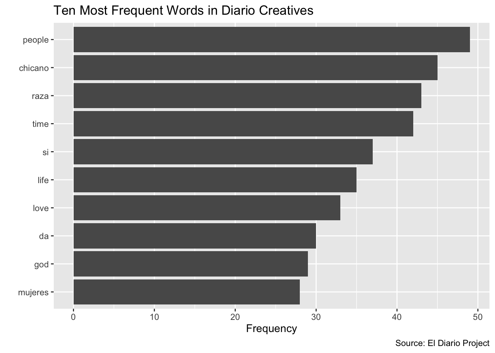

6 Visualizing word frequency data
In order to quickly get a sense of some of the general patterns in a word frequency table, it is often useful to create some basic visualizations that are derived from it. In this section, we’ll learn how to quickly get a birds-eye overview of basic patterns in a word frequency table by creating a chart (6.1), and by creating a word cloud (6.2).
6.1 Charting word frequencies
In this subsection, we’ll learn how to use ggplot2, a data visualization package that is also a part of the tidyverse, to create a simple bar chart that displays the ten most frequently occurring words in our text collection.
6.1.1 Extracting dataframe of ten most frequent words
The first step in creating a chart of the ten most frequently occurring words in the “creatives” text collection is to take diario_frequency_table (our word frequency table), and make a new dataset by extracting the ten most frequently ocurring words.
Below, we use the slice_max() function from dplyr to extract the rows with the ten highest values in the “n” column of diario_frequency_table. The first argument to slice_max is the name of the column we would like to parse for values, and n=10 specifies that we would like to extract the rows with the ten highest values for the “n” column (i.e. the column that contains our word frequencies). Finally, we assign this selection of the rows, which contain the ten most frequently occurring words in diario_frequency_table, to a new object named diario_top_ten:
# extracts ten most frequently appearing words from "diario_frequency_table" from
# "diario_frequency_table" and assigns this data frame to a new object named
# "diario_top_ten"
diario_top_ten<-diario_frequency_table %>%
slice_max(n, n=10)Let’s view diario_top_ten within the data viewer:
# Views "diario_top_ten" in dat viewer
View(diario_top_ten)Next, we will use diario_top_ten as an input into ggplot2 to create our desired chart.
6.1.2 Using ggplot2 to make chart of ten most frequent words
We now have the information we need to make our chart, which is created through the code printed in the codeblock below. Let’s unpack its various elements:
* The first function, ggplot(), initializes a new ggplot object. The argument to ggplot(), data=diario_top_ten, specifies the underlying data that we would like to use in making our visualization.
* Next (note that after initializing ggplot, functions are chained together with a “+”), the geom_col() function specifies that we want to make a bar graph; there are various other “geom” functions within ggplot2 that correspond to different types of visualizations (i.e. scatterplots, line graph, boxplot etc.). The expression within the geom_col() function, aes(x=word, y=n), is known as an “aesthetic mapping”, which is defined within the aes() function. An aesthetic mapping describes how we want to map the properties of our data onto the visual features of our bar chart; the phrase x=word, y=n, specifies that we want information from the “word” column in diario_top_ten to be represented on our chart’s x-axis, and the information from the “n” column in diario_top_ten to be represented on the y-axis.
* The labs() argument (short for “labels”) takes several arguments, which allow us to specify a title for our chart, a caption (where we can provide information on the source of our data), and labels for our x-axis (“x”) and y-axis (“y”). Note that by setting x="", we are specifying that we do not wish to label the x-axis (since it is self-explanatory, given the context).
* Finally, we’ll assign the plot created by this code to a new object named diario_frequency_graph.
# Creates bar chart of word frequency of ten most frequently occurring words in "diario_top_ten"
diario_frequency_graph<-
ggplot(data=diario_top_ten)+
geom_col(aes(x=word, y=n))+
labs(title="Ten Most Frequent Words in Diario Creatives",
caption = "Source: El Diario Project",
x="",
y="Frequency")To see the plot we just created, we can print the name of the object to which it has been assigned, diario_frequency_graph, within our console; it will appear in the “Plots” tab on the bottom-right of your RStudio interface.
# prints "diario_frequency_graph"
diario_frequency_graphThis graph is a nice foundation, and ggplot2 offers extensive customization options that allow users to refine their plots. For example, let’s say we want to order our words (on the x-axis) in ascending order with respect to their frequency. We can do so by slightly modifying the aesthetic mapping, with the expression aes(x=reorder(word, n), y=n); by using the reorder function, we are able to specify that we want the information from the “word” column to be represented on the x-axis (as above), but that we want the words to be ordered with respect to their frequencies (contained in the “n” column); the expression y=n within aes() is the same as above. We’ll assign this slightly modified plot back to the diario_frequency_graph object, which effectively updates the previous object with this modification to the order of words along the x-axis:
# Creates a bar chart of information in diario_top_ten with "word" on x-axis
# and ordered with respect to their frequency ("n")
diario_frequency_graph<-
ggplot(data=diario_top_ten)+
geom_col(aes(x=reorder(word, n), y=n))+
labs(title="Ten Most Frequent Words in Diario Creatives",
caption = "Source: El Diario Project",
x="",
y="Frequency")Let’s view our updated plot:
# prints updated "diario_frequency_graph"
diario_frequency_graphSometimes, it may be preferable to invert the x and y coordinates of a bar graph, which creates a “sideways” bar chart with horizontal bars (instead of vertical ones). Because this is a common operation, ggplot2 provides a ready-made function that allows us to invert coordinates, called coord_flip(). All we have to do to flip our coordinates and create a horizontal/sideways bar chart is to add this function to the code that we wrote above. We’ll assign this modified code to a new object named diario_frequency_graph_inverted:
# Uses "diario_top_ten" data frame to make horizontal bar chart of ten most
# frequently used words in corpus, in ascending order; the chart is assigned
# to a new object named "diario_frequency_graph_inverted"
diario_frequency_graph_inverted<-
ggplot(data=diario_top_ten)+
geom_col(aes(x=reorder(word, n), y=n))+
coord_flip()+
labs(title="Ten Most Frequent Words in Diario Creatives",
caption = "Source: El Diario Project",
x="",
y="Frequency")Now, let’s see what our new plot looks like:
# prints "diario_frequency_graph_inverted" plot
diario_frequency_graph_inverted
6.2 Creating a wordcloud
Another popular way to visualize the information in a word frequency table is to create a wordcloud. There are a number of wordcloud packages in R that facilitate wordcloud generation. Here, we’ll use the wordcloud2 package to create a worldcloud that visually represents word frequencies contained in diario_frequency_table. The main argument to the wordcloud2 package’s corresponding wordcloud generating function, wordcloud2(), specifies the dataset from which the wordcloud is to be generated (here, diario_frequency_table, i.e. the frequency table):
# make word cloud based on word frequency information from "df_word_frequencies"
wordcloud2(data = diario_frequency_table, minRotation = 0, maxRotation = 0, ellipticity = 0.6)To see what some of the other arguments to the wordcloud2() function above are doing (such as “minRotation” or" “ellipticity”), consider checking out the function’s documentation (which includes a detailed explanation and guide to a function’s various arguments). For any function in R, you can inspect the relevant documentation by typing its name in the console, preceded by a “?”. For example,
if we want to inspect the documentation for the wordcloud2() function, we can type the following:
# retrieves documentation for "wordcloud2()" function
?wordcloud2After running that code in your console, you will see the function’s documentation open up in the “Help” tab on the bottom-right window of your RStudio interface.
Take a look at the various arguments to wordcloud2(), and experiment with some of them to try and customize the appearance of the wordcloud we created above.